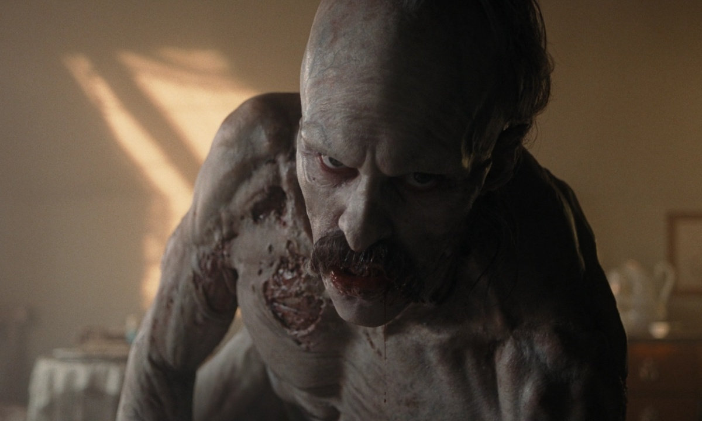
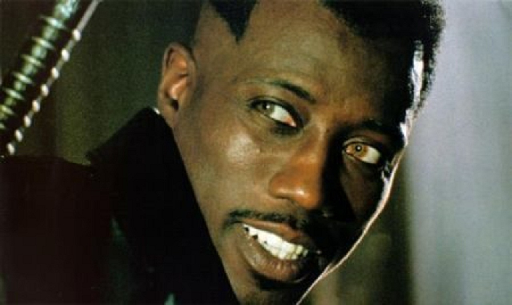

Nossa Seleção Sombria
-
Sinners (2025)
Dispostos a deixar suas vidas conturbadas para trás, irmãos gêmeos retornam à cidade natal para recomeçar suas vidas do zero, quando descobrem que um mal ainda maior está à espera deles para recebê-los de volta.
-

Nosferatu (2024)
Uma jovem noiva é deixada sob os cuidados de amigos quando seu marido viaja para a Transilvânia para um encontro com o Conde Orlok. Atormentada por visões terríveis e uma crescente sensação de pavor, ela logo encontra uma força maligna que está muito além de sua compreensão.
-
Renfield (2023)
Renfield, o torturado ajudante de Drácula, é forçado a capturar presas para seu mestre e cumprir todas as suas ordens. Mas agora, após séculos de servidão, Renfield está pronto para ver se há uma vida fora da sombra de seu chefe.
-


The Invitation (2022)
Após um teste de DNA, Evie tem notícias de um primo distante e, melhor ainda, recebe um convite para um casamento luxuoso no campo. No entanto, pouco depois de chegar, Evie descobre a terrível verdade por trás do evento.
-


What We Do in the Shadows (2014)
Protegidos por crucifixos, um grupo de cineastas entra com suas câmeras para registrar a intimidade de quatro imortais que compartilham o lar em um subúrbio da Nova Zelândia. Enquanto eles lidam com os conflitos naturais da convivência, eles tentam se manter atualizados tanto com a vida moderna como com todo o século passado.
-

Twilight (2008)
Quando Bella Swan se muda para uma pequena cidade no Noroeste Pacífico dos Estados Unidos, ela se apaixona por Edward Cullen, um misterioso colega de classe que se revela um vampiro.
-


Van Helsing (2004)
Um notório caçador de monstros é enviado para a Transilvânia para prender o Conde Drácula, que está usando a pesquisa do Doctor Frankenstein e um lobisomem para um propósito sinistro.
-

Blade (1998)
O herói Blade, metade mortal e metade imortal, parte em busca do vampiro responsável pela morte de sua mãe. Blade quer eliminá-lo do mundo dos vampiros e em um mundo tecnologicamente avançado, Blade lutará para capturar aquele que quer destruir a vida humana.
-


Interview with the Vampire (1994)
Um jornalista biógrafo entrevista um jovem que afirma ser vampiro. Louis de Pointe du Lac, um homem que perdeu tudo, narra suas experiências dos últimos 200 anos e reconta seu encontro com Lestat de Lioncourt, uma criatura da noite.
-


Bram Stoker's Dracula (1992)
O vampiro centenário Conde Drácula vai para a Inglaterra seduzir Mina Murray, a noiva do seu advogado Jonathan Harker, e causar estragos em terra estrangeira.
-


The Lost Boys (1987)
Depois de se mudar para uma nova cidade, os irmãos Sam e Michael descobrem que a área é um refúgio para vampiros. Sam tem que trabalhar rápido, pois Michael está se apaixonando por uma destas criaturas e está gradualmente se tornando um deles.
-


Fright Night (1985)
Charley Brewster, um jovem apaixonado por filmes de terror, começa a acreditar que seu novo vizinho, Jerry Dandridge, é um vampiro. O rapaz procura o apresentador de programas de terror na TV Peter Vincent para ajudá-lo.
-
Nosferatu (1922)
O corretor de imóveis Hutter precisa vender um castelo cujo proprietário é o excêntrico conde Orlock. O conde, na verdade, é um vampiro milenar que espalha o terror na região de Bremen, na Alemanha e se interessa por Ellen, a mulher de Hutter.